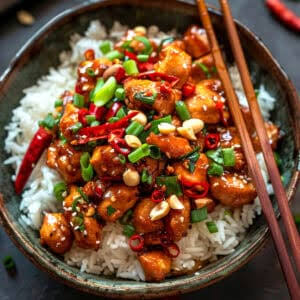

Kung Pao Chicken

Description
Kung Pao Chicken is a classic Sichuan stir-fry made with diced chicken, roasted peanuts, and dried chilies, all tossed in a bold, savory-sweet sauce with a signature tingly heat from Sichuan peppercorns. It's known for its balance of spicy, sweet, salty, and slightly sour flavors, plus that satisfying crunch from the peanuts.
Ingredients:
- 500 grams boneless, skinless chicken thighs, cut into 2cm cubes
- 1 tablespoons soy sauce for marinade
- 1 tablespoons Shaoxing wine for marinade
- 1 teaspoons cornstarch for marinade
- 2 tablespoons soy sauce
- 1 tablespoons dark soy sauce
- 1 tablespoons black rice vinegar
- 1 tablespoons sugar
- 1 teaspoons cornstarch for sauce slurry
- 60 milliliters water
- 3 tablespoons vegetable oil, divided
- 10 dried red chilies, roughly snapped in half
- 1 teaspoons Sichuan peppercorns
- 4 garlic cloves, minced
- 4 spring onions, white and green parts separated, sliced into 2cm pieces
- 100 grams roasted unsalted peanuts